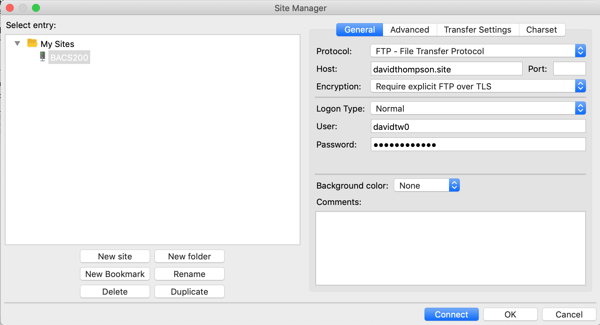

Development Skills.
There are essential development skills that must be mastered in this class.
Each of these skills can be demonstrated by a screen shot of your computer
system.
Skill #1 - Web Hosting
- Sign Up for Bluehost
- Register your domain with Sensei Server


/////////////
Skill #2 - FTP
- FTP
- Connected Filezilla to bluehost file manager
////////////////
Skill #3 - Github
- Connected Github
- Using github Desktop
//////////////
Skill #6 - Database
- A working CRUD database for php app

/////////////
Skill #7 - Dev Workflow
//////////////
Skill #9 - Logging
///////////////
Skill #10 - Render Templates

///////////////